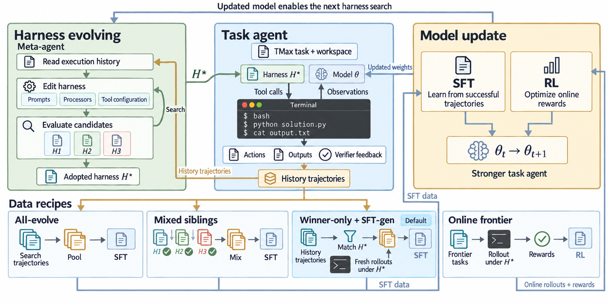
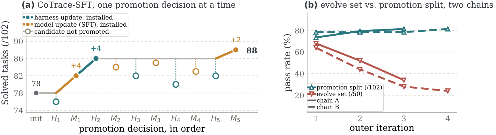

核心判断：CoTrace 把 harness 搜索和模型训练放进同一个数据平面：按失败原因分流轨迹，按组件级 promotion 更新 adopted harness，并持续刷新当前 frontier。训练数据与当前 runtime 对齐，减少‘用旧 harness 轨迹训练新 harness’的错配。
问题与动机
只收集所有成功轨迹会混入不同 harness 的 provenance，模型学到的行为无法在部署 runtime 重放。
方法框架
- Route 按失败类型选择数据来源；Ratchet 只晋升经过验证的组件；Refresh 持续为当前 harness 生成新 rollout。
- 比较 All-evolve、Mixed siblings、CoTrace-SFT 和 CoTrace-RL，区分 harness 与 model 的贡献。
- 在 Terminal-Bench 与 SWE-bench Lite 上检查跨 runtime/OOD transfer。
实验与核心结论
- 9B CoTrace-RL 从 78 提升到 90，较初始 +12；4B CoTrace-RL 从 67 提升到 79。
- Terminal-Bench 2.1 的 +RL 为 pass@1 22.1、pass@3 33.7；SWE-bench Lite 的 co-evolved pair 为 41.0%。
- 相同提升下 CoTrace 比混合 sibling 数据使用更少但 provenance 更干净的轨迹。
CoTrace 主流程

主要结果

价值与边界
核心启发是把数据 provenance 当作训练变量；代价是 harness 搜索、promotion 和在线 rollout 的计算量较高。